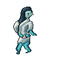
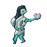
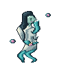
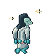
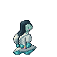

<!doctype html>
<html lang="ko"><meta charset="utf-8"><meta name="viewport" content="width=device-width,initial-scale=1">
<title>연못수귀 · 동작 미리보기</title>
<style>
:root{color-scheme:dark}*{box-sizing:border-box}body{margin:0;background:#202a32;color:#ecebdd;font:16px system-ui,sans-serif}main{max-width:1150px;margin:auto;padding:24px}h1{font-size:24px;margin:0 0 12px}p{color:#c8d2ce}.controls{display:flex;flex-wrap:wrap;gap:8px;margin:18px 0}button{background:#33454e;border:1px solid #77908d;color:inherit;border-radius:6px;padding:9px 14px;cursor:pointer}button[aria-pressed=true]{background:#416e72}.grid{display:grid;grid-template-columns:repeat(auto-fit,minmax(250px,1fr));gap:14px}figure{margin:0;border:1px solid #52636b;border-radius:8px;overflow:hidden}figcaption{padding:10px 14px;background:#2c3c44}.view{display:grid;place-items:center;min-height:310px;background:#e9e3cf}.view img{width:288px;height:288px;image-rendering:pixelated}.dark .view{background:#181f28}.checker .view{background-color:#cdd4d3;background-image:linear-gradient(45deg,#96a0a5 25%,transparent 25%),linear-gradient(-45deg,#96a0a5 25%,transparent 25%),linear-gradient(45deg,transparent 75%,#96a0a5 75%),linear-gradient(-45deg,transparent 75%,#96a0a5 75%);background-size:32px 32px;background-position:0 0,0 16px,16px -16px,-16px 0}.native .view img{width:96px;height:96px}.native .view{min-height:140px}a{color:#8fddd1}footer{margin-top:20px}
</style>
<main><h1>연못수귀</h1><p>18자세 · 8동작 · 96px 원본</p>
<div class="controls"><button onclick="bg('')" aria-pressed="true" data-bg="">밝은 배경</button><button onclick="bg('dark')" aria-pressed="false" data-bg="dark">어두운 배경</button><button onclick="bg('checker')" aria-pressed="false" data-bg="checker">체커 배경</button><button id="scale" onclick="scale()">원본 1배 보기</button><button id="play" onclick="pause()">일시 정지</button></div>
<section class="grid">
<figure><figcaption>대기</figcaption><div class="view"></div></figure>
<figure><figcaption>공격</figcaption><div class="view"></div></figure>
<figure><figcaption>피격</figcaption><div class="view"></div></figure>
<figure><figcaption>쓰러짐</figcaption><div class="view"></div></figure>
<figure><figcaption>연수파</figcaption><div class="view"></div></figure>
<figure><figcaption>독</figcaption><div class="view"></div></figure>
<figure><figcaption>기절</figcaption><div class="view"></div></figure>
<figure><figcaption>수면</figcaption><div class="view"></div></figure>
</section>
<footer><a href="sheet-light.png">18자세 시트</a> · <a href="sheet-native.png">원본 1배 시트</a> · <a href="../AUTHORING.md">저작 기록</a> · <a href="../TIMING.md">시간표</a></footer>
</main><script>
let background='',isNative=false,isPaused=false;
function refresh(){document.body.className=[background,isNative?'native':''].join(' ')}
function bg(name){background=name;refresh();document.querySelectorAll('[data-bg]').forEach(b=>b.setAttribute('aria-pressed',String(b.dataset.bg===name)))}
function scale(){isNative=!isNative;refresh();document.getElementById('scale').textContent=isNative?'확대 3배 보기':'원본 1배 보기'}
function pause(){isPaused=!isPaused;document.querySelectorAll('.view img').forEach(im=>im.src=isPaused?im.dataset.still+'.png':im.dataset.gif+'.gif');document.getElementById('play').textContent=isPaused?'재생':'일시 정지'}
</script></html>
